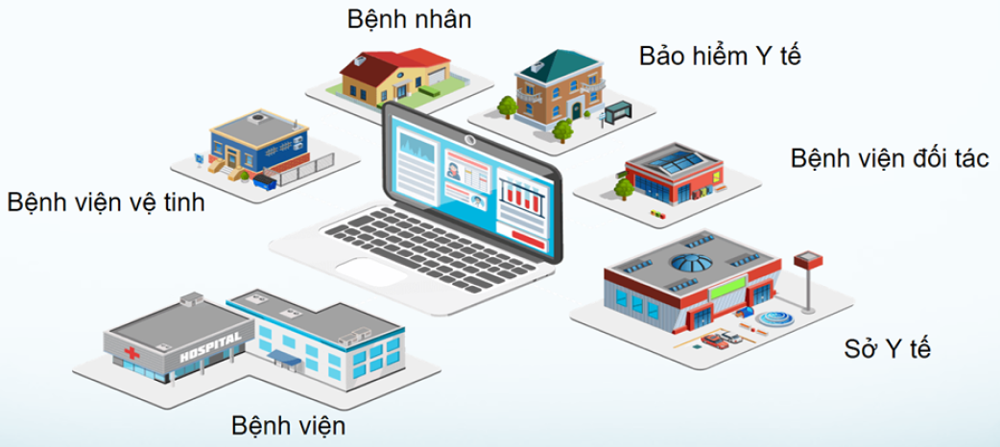

Bài viết nổi bật
Sáu bài hướng dẫn do VietHealth Travel biên soạn.
Chi phí khám chữa bệnh tại Việt Nam: Hướng dẫn thực tế cho Việt kiều
Hiểu các nhóm chi phí, yếu tố làm thay đổi dự toán và cách chuẩn bị ngân sách trước khi khám hoặc điều trị tại Việt Nam.
Người nước ngoài và Việt kiều cần chuẩn bị gì trước khi khám chữa bệnh tại Việt Nam?
Checklist thực tế về hồ sơ y tế, chi phí, bảo hiểm, visa, thuốc, lưu trú và kế hoạch theo dõi sau điều trị.
Những nhóm điều trị thường được người nước ngoài và Việt kiều cân nhắc tại Việt Nam
Nha khoa, ngoại khoa, tuyến giáp, ung bướu, cơ xương khớp, mắt và hỗ trợ sinh sản, kèm các ví dụ thực tế.
Từ những dấu ấn lịch sử đến y học hiện đại: Việt Nam đã làm chủ những kỹ thuật y khoa nào?
Tổng quan về ghép tạng, tim mạch, đột quỵ, ung thư, IVF, chỉnh hình và những kỹ thuật tiên phong đang được triển khai tại Việt Nam.

Tổng quan về hệ thống y tế Việt Nam: Người nước ngoài và Việt kiều phù hợp với lựa chọn nào?
Phân biệt BHYT, khám theo yêu cầu, bệnh viện công, tư và quốc tế để chọn con đường tiếp cận phù hợp và hiểu rõ phần chi phí tự trả.
Các nguồn cần biết để tìm bệnh viện và bác sĩ tại Việt Nam
Hướng dẫn tra cứu và kiểm chứng thông tin từ đại sứ quán, website bệnh viện, cơ quan quản lý, bảo hiểm, cộng đồng và các chứng nhận quốc tế.